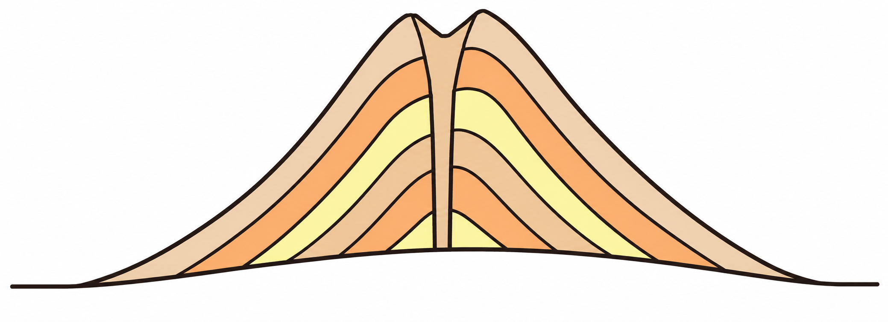
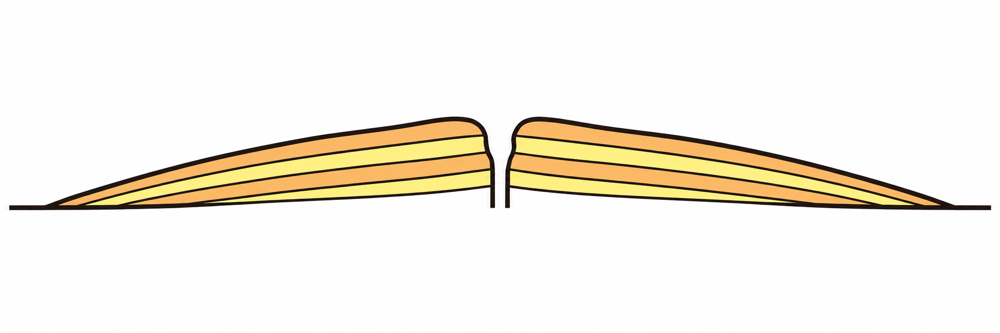
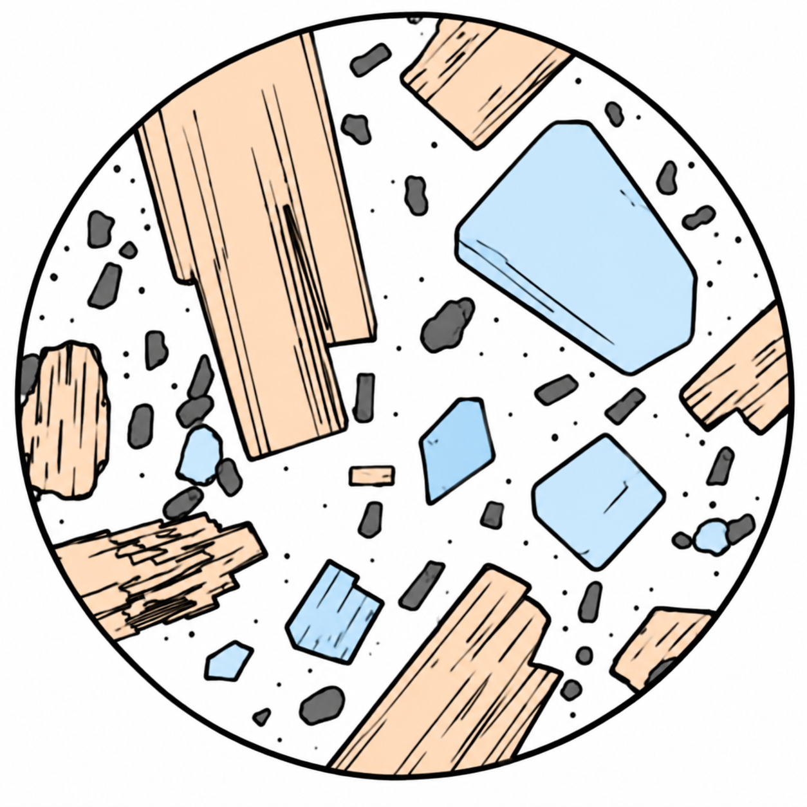
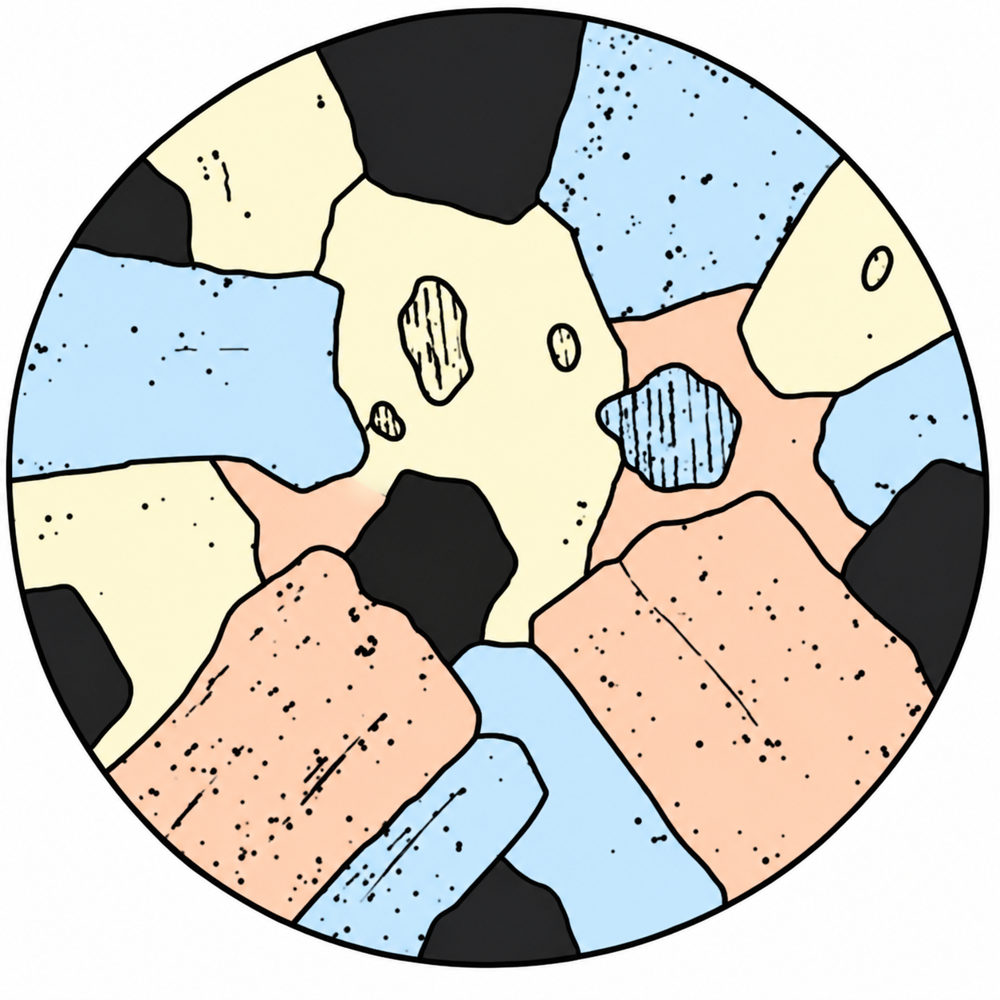

1火山の形と性質(テキストの表の整理)
📖 江原予備校テキスト より
火山の形・マグマの粘りけ・噴火のようすの関係を整理する問題。

成層火山(粘りけ:中間)

盾状火山(粘りけ:弱い)
✏️ 確認問題
問1マグマの粘りけが弱い火山について、正しい組み合わせはどれか。
正解はイ。粘りけが弱いと広がりやすく、傾斜はゆるやか。噴火はおだやかで、溶岩は黒っぽい色です(例:マウナロア)。
問2昭和新山と同じ形の火山で、マグマの粘りけが強いものはどれか。
正解はウ。昭和新山は粘りけの強いマグマでできた鐘状火山(溶岩ドーム)です。
問3富士山の形(成層火山)をつくるマグマの粘りけは、どのくらいか。
正解はエ。成層火山の粘りけは中間で、噴火のしかたも中間的です。
2火成岩の組織と種類
📖 江原予備校テキスト より
火成岩の分類表(火山岩・深成岩 × 白っぽい〜黒っぽい)を使った問題。

斑状組織(火山岩)

等粒状組織(深成岩)
✏️ 確認問題
問1次の岩石を、白っぽいものから黒っぽいものの順に並べたものはどれか(火山岩)。
正解はイ。火山岩は「流紋岩(白)→安山岩→玄武岩(黒)」の順。覚え方「リュウモンさんゲップして」(流紋・安山・玄武)。
問2等粒状組織をもち、無色鉱物が多くて白っぽい岩石はどれか。
正解はエ。等粒状組織=深成岩。白っぽい深成岩は花こう岩です。
問3斑状組織をもち、黒っぽい岩石はどれか。
正解はア。斑状組織=火山岩。黒っぽい火山岩は玄武岩です。
問4火成岩が白っぽくなるのは、どんな鉱物を多くふくむからか。
正解はウ。無色鉱物のセキエイ・チョウ石が多いと白っぽく、有色鉱物が多いと黒っぽくなります。